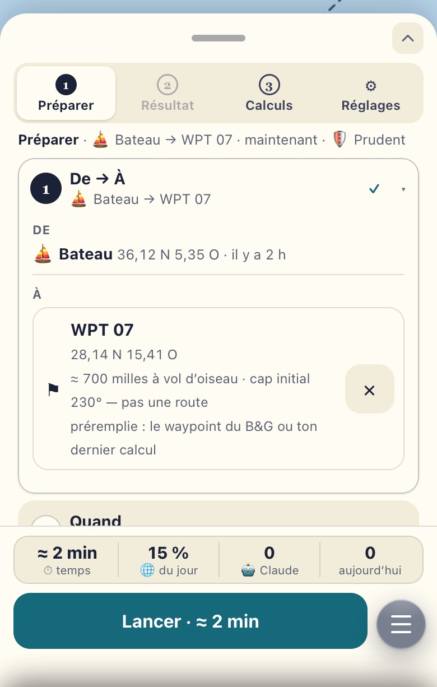
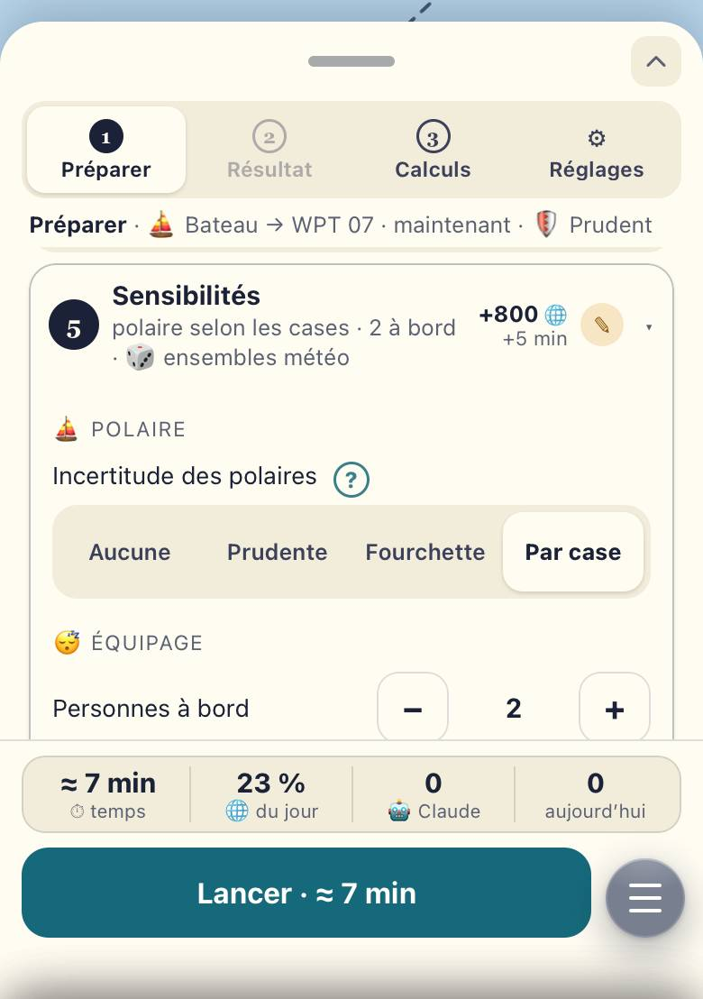
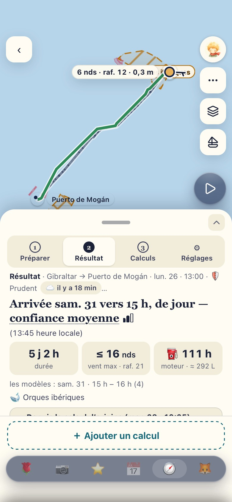
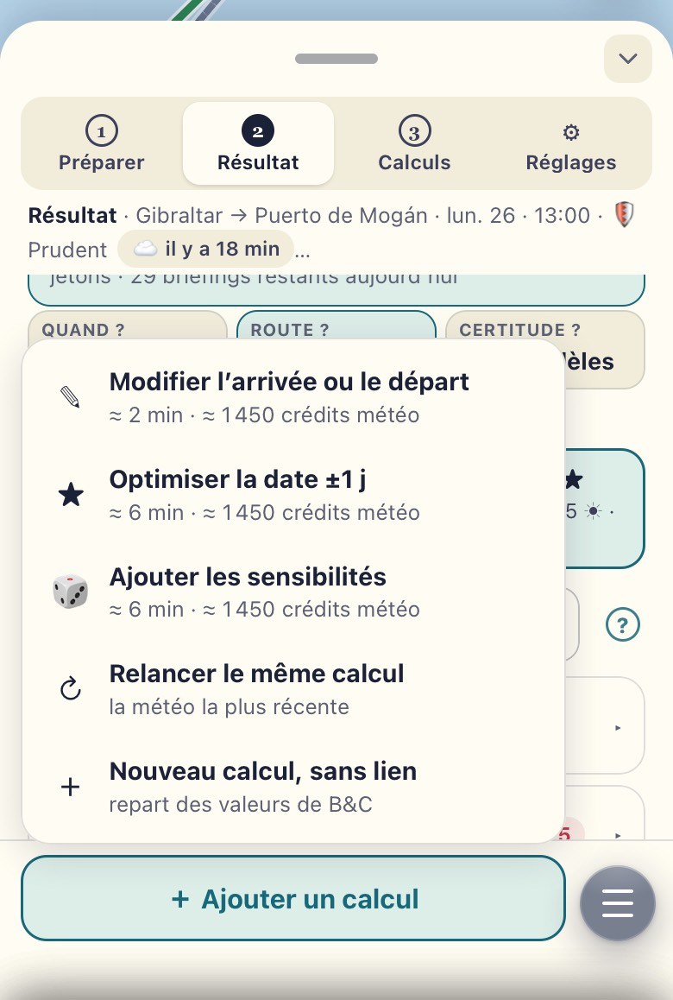
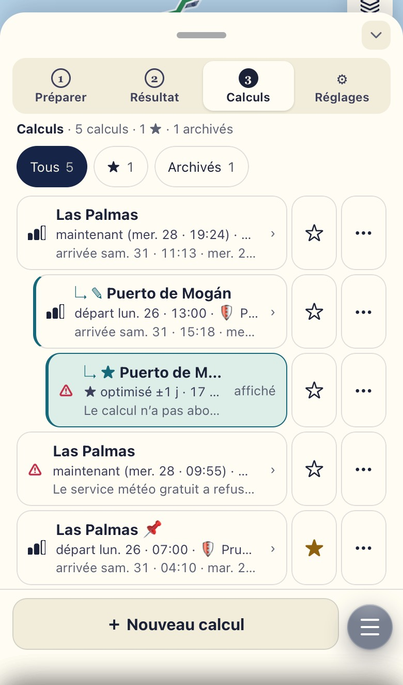
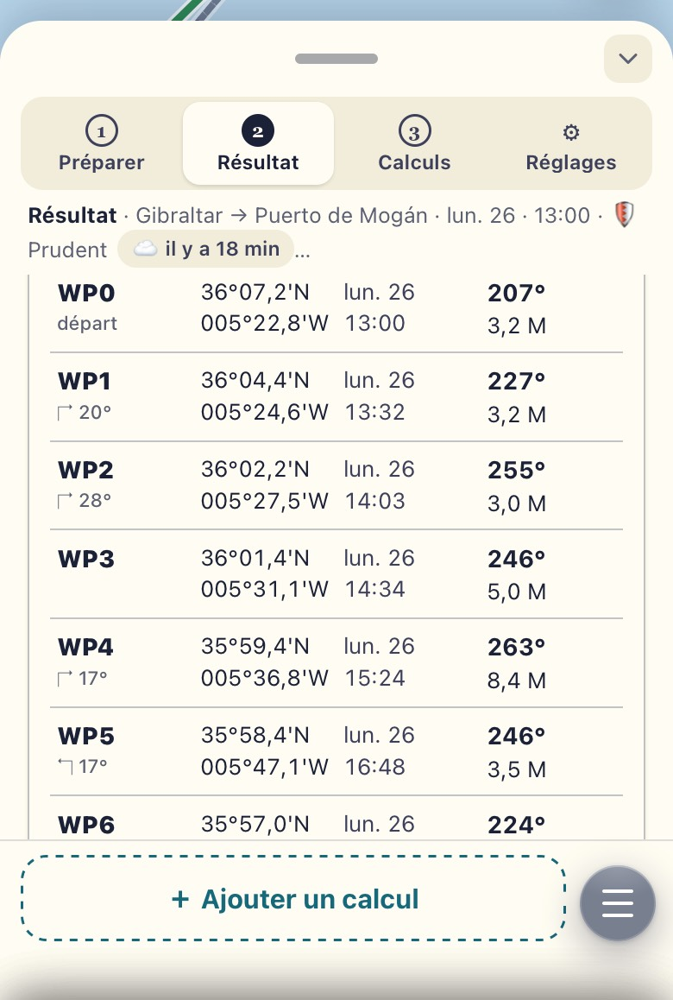

Wang’ap · Outremer 52 · Routage
Le routage pas à pas
L’écran du routage a été réorganisé. Rien n’a disparu : chaque bouton a gardé une place. Cette page le montre étape par étape, avec de vraies captures de l’app.
Les captures viennent d’un essai Gibraltar → Puerto de Mogán / Las Palmas avec des données de test : ni la position, ni les heures, ni les chiffres ne sont ceux de Wang’ap.
Ce qui change
En bref
- Quatre modes, toujours en haut : ① Préparer · ② Résultat · ③ Calculs · ⚙ Réglages. Sur l’iPad couché, ils forment un rail à gauche. « Résultat » reste grisé tant qu’aucun calcul n’existe.
- Huit étapes déjà remplies avec vos valeurs. « Lancer » marche tout de suite : on n’ouvre que ce qu’on veut changer.
- Le coût avant de lancer : une bande au-dessus de « Lancer » dit le temps et la part de la météo du jour.
- Vos réglages du routage sont dans le routage (⚙). Dans les Réglages de l’app, la carte 🧭 Routage ne fait plus qu’ouvrir ceux-ci.
- Rien n’a disparu. ✎ Modifier et ↻ Relancer sont dans « ＋ Ajouter un calcul ». « 🕘 Mes calculs » est devenu le mode ③ Calculs.
Pour y aller : l’onglet 🧭 du menu du bas, ou le menu de votre avatar → Routage. Dès que vous travaillez dans le routage, le menu du bas se range dans un bouton rond ☰ en bas à droite : touchez-le pour le retrouver. Le panneau se monte et se descend par sa bande du haut (━, ⌃ / ⌄).

Une minute
Avant de commencer
Le bon moment
- Au port ou au mouillage, Starlink allumé.
- Pas la veille d’un départ. Jamais pendant une traversée.
- Vérifiez la version : Réglages → 🔧 Maintenance technique. Il doit être écrit « Wang’ap v3.44.0 ».
- Si l’app semble ancienne : au même endroit, le bouton Forcer la mise à jour. Ou ouvrez www.wangap.fr/?reset=1.
Économiser les crédits météo
- Open-Meteo, la météo gratuite du calcul, donne ≈ 10 000 crédits par jour, pour tous les calculs.
- Une zone neuve coûte ≈ 1 450 crédits : ≈ 15 % du jour.
- Une destination déjà calculée dans les 3 dernières heures : 0 crédit.
- Pour cliquer partout sans compter : à l’étape 6, 🧪 Fictive (test). Réservé au skipper. Le résultat dit « TEST » partout et ne peut jamais être montré à la famille (📌).
- Un test = un seul vrai calcul.
Une seule convention, partout
Les signes
- ✓
- valeur par défaut : vos réglages.
- ✎
- changé pour ce calcul seulement. Vos réglages ne bougent pas.
- ⚠
- manquant, à voir (par exemple : pas encore d’arrivée).
- ▸ ▾
- se déplie. Toute la ligne se touche, pas seulement la petite flèche.
- ›
- ouvre ailleurs : un autre panneau, une autre page.
- ?
- explique, dans une petite bulle. Touchez dehors ou ✕ pour la fermer.
Sur l’iPhone, une seule étape (ou carte, ou groupe) est ouverte à la fois : en ouvrir une referme l’autre. Sur l’iPad, plusieurs.
① Préparer
Préparer, étape par étape
Chaque ligne fermée dit sa valeur. Ouvrez seulement ce que vous voulez changer. Ce que vous changez ici vaut pour ce calcul seulement (✎).
-
De → À
Fermée
Bateau → WPT 07
- De : le bateau, sa dernière position et son âge (« il y a 2 h »). Après « ＋ Ajouter un calcul », ce peut être le départ du calcul d’origine ; « ⛵ partir du bateau » ramène au bateau.
- À : déjà remplie avec le waypoint actif du B&G, sinon votre dernière arrivée. ✕ pour en choisir une autre :
- « Waypoint actif du B&G » ;
- un nom (la marina d’abord) ou des coordonnées, dans « Port, marina… ou 28.39, -16.35 » ;
- « Une épingle sur la carte », ou un appui long sur la carte : glissez l’épingle, puis Confirmer ;
- « Destinations récentes ».
- « ≈ 700 milles à vol d’oiseau · cap initial 230° — pas une route » : un ordre d’idée, pas la route.

L’arrivée préremplie par le waypoint du B&G. La croix ✕ ouvre les autres choix. -
Quand
Fermée
maintenant (mer. 28 · 21:00)
- Maintenant : le départ à la prochaine heure pleine, à l’heure du téléphone.
- À une date : « demain 08:00 », « +12 h », « +24 h », ou la date de votre choix.
- ★ Optimisé skipper : le meilleur départ autour de maintenant ou d’une date, sur ±12 h, ±1 j ou ±2 j. Un départ toutes les 3 h : « 17 départs, de mer. 28 · 21:00 à ven. 30 · 21:00 ».
- Le prix : ≈ 4 min de plus, 0 crédit (il relit la météo déjà téléchargée).
- Le résultat s’ouvre alors sur « Quand ? » : une ligne par objectif, une colonne par départ, ★ le meilleur départ de chaque ligne. Touchez une case pour voir sa route.

★ Optimisé ±1 j. Le ✎ dit « changé pour ce calcul » ; « +4 min » est le prix en temps. -
Objectif
Fermée
🛡 Prudent · limites à 80 %
🛡 Prudent Votre défaut. Reste sous 80 % de vos limites, arrive de jour, puis le confort, puis la vitesse. Accepte d’aller plus lentement aujourd’hui pour éviter le gros temps demain. 🛋 Confort Moins de près et de mer de travers. ⚡ Rapide L’arrivée la plus tôt, dans vos limites. Toujours calculée aussi : c’est la route de référence. ⛵ Voile Le moins de moteur, sans être plus de 15 % plus lente que Rapide. ✏️ Personnalisé Votre ordre de priorités et vos valeurs. Le bouton apparaît une fois enregistré dans ⚙ Réglages → Objectif. « L’ordre des priorités et les valeurs › » pour aller plus loin.

Les objectifs. « Pour ce calcul seulement : les Réglages de B&C ne bougent pas. » -
Contraintes
Fermée
≤ 26 nds · raf. 34 · 3 m · près 50° · côte 3 M
- Ce qui limite la route, avec – et + : vent max 26 nds, rafales 34 nds, vagues 3 m, près pas sous 50°, la côte à 3 milles, les petits fonds.
- Plus bas dans l’étape : les dangers (🐋 orques, le large du Sahara) — signalés, évités, à quelle distance.
- Changées ici : pour ce calcul seulement (✎). « Revenir à mes valeurs par défaut » remet ces limites.
- Le moteur et le gazole ne sont pas ici : ce sont des réglages du bateau, dans ⚙ Réglages → ⛽ Moteur et gazole. Chaque calcul les prend tels quels.
- Pour changer vos valeurs pour de bon : ⚙ Réglages (plus bas).
-
Sensibilités
Fermée
polaire selon les cases · 2 à bord · aucune
D’abord, les hypothèses du calcul
- ⛵ Polaire : son incertitude. Aucune · Prudente (toutes les cases −10 %) · Fourchette (85 à 110 %) · Par case (selon la confiance de chaque case : votre défaut).
- 😴 Équipage : 2 à bord, 6 heures dures d’affilée au plus, une nuit en mer « coûte » 3 h, 2 % de rendement perdu par jour après 48 h, préférer arriver reposés.
- Changées ici : pour ce calcul seulement (✎) ; la famille peut les changer aussi. Les valeurs par défaut : ⚙ Réglages → ⛵ Polaires et 😴 Équipage.
Puis, des calculs en plus skipper
Pour savoir si la réponse tient quand on change une hypothèse. ⛵ et 😴 se calculent aussi hors ligne, sur l’appareil ou au PC du bord (quelques secondes de plus) ; 🎲 reste au nuage — l’app le dit.
Case Ce qu’elle fait Prix 🎲 Ensembles météo 173 variantes de la prévision : l’arrivée au plus tôt, la plus probable, au plus tard, et la part de jour. Au nuage seulement (trop lourds pour l’appareil). ≈ 5 min
≈ 800 crédits*⛵ Incertitude des polaires La route refaite avec le bateau à 85 % (carène sale, chargé) et à 110 % (bien réglé). Aussi hors ligne. ≈ 15 s
0 crédit
ici : ≈ +5 à 10 s😴 Équipage / perf. La route refaite « reposés », puis « fatigués ». Aussi hors ligne. ≈ 15 s
0 crédit
ici : ≈ +5 à 10 s* 0 si la même zone a été calculée il y a moins de 3 h.

Les hypothèses d’abord (⛵ polaire, 😴 équipage) ; les trois cases sont plus bas. 🎲 coché : la bande passe de ≈ 2 min · 15 % à ≈ 7 min · 23 % du jour. -
Météo
Fermée
🌐 En direct · 6 modèles
- 🌐 En direct : la prévision du moment, six modèles et les vagues. ≈ 1 450 crédits pour une zone neuve, 0 si elle est déjà là.
- 🗄 Précédente : rien n’est téléchargé. Le calcul reprend la dernière météo gardée pour la zone, quel que soit son âge. Le résultat dit cet âge et la confiance baisse. 0 crédit.
- 🧪 Fictive (test) : une météo inventée, pour essayer sans rien dépenser. « TEST » partout ; jamais montrée à la famille. 0 crédit.
- Les six modèles : ECMWF IFS (la référence), GFS, ICON, ECMWF AIFS, UK Met Office, Météo-France.
- La source se règle au skipper ; la famille calcule toujours en direct.

« Zone neuve : ≈ 1 450 crédits météo ». La ligne fermée porte « +1 450 · +2 min ». -
Calcul : où calculer
Fermée
☁️ Nuage
- ☁️ Nuage : par défaut. Le calcul se fait à terre ; il faut du réseau. Vous pouvez quitter la page : le résultat vous attendra.
- 📱 Cet appareil : le même calcul sur l’iPhone ou l’iPad, sans réseau, avec une météo rangée d’avance (voir Hors ligne). ≈ 15 s, 0 crédit ; ⛵ et 😴 aussi (quelques secondes de plus) ; ★ Optimisé : une grille légère sur l’iPad (≈ 1 min), pas sur l’iPhone ; 🎲 au nuage seulement. Le bouton devient « 📱 Calculer sur cet appareil ».
- 🖥️ PC du bord : pas encore installé chez vous. Flavien vous enverra de quoi le faire. D’ici là, laissez-le de côté.

📱 choisi. En rouge : pas encore de météo rangée ici. La bande dit « hors quota ». -
Lancer
Fermée
≈ 2 min · 15 % du jour · 0 jeton
- Une phrase redit tout : « Gibraltar → Puerto de Mogán, départ le meilleur ±1 j, 🛡 Prudent, météo 🌐 en direct, au nuage. »
- Le détail du coût, ligne par ligne, puis « En tout ».
- Une barre : les crédits du jour déjà pris par vos calculs, celui-ci, ce qui restera.
- Puis Lancer · ≈ 2 min. Vous pouvez quitter la page pendant le calcul.
🤖 Un briefing écrit par Claude
Décoché par défaut. Cochez-le si vous voulez, en plus, un court texte en mots simples. Claude, une intelligence artificielle, l’écrit à partir des chiffres du calcul lui-même : en bref, pourquoi cette route, le passage, ce qu’il faut surveiller, ce qu’il faut télécharger avant de partir.
- Chaque chiffre vient du calcul. Claude n’en invente aucun ; le texte est marqué « ✨ écrit par Claude d’après les chiffres du calcul ».
- Le prix : 2 à 3 centimes (l’app dit « ≈ 4 000 jetons » : la longueur du texte lu et écrit).
- Il peut manquer : jamais sur une météo 🧪 fictive, ni pour un calcul 📱 ou 🖥️. Si Claude ne répond pas, vous avez les raisons du calcul, sans les phrases.
- Après coup : la carte « ✨ Briefing » en tête du Résultat le demande aussi.

Ici le briefing est coché pour l’exemple : la case Claude de la bande passe à « ≈ 4 000 ».
Au-dessus de « Lancer »
La bande des coûts
Quatre cases, mises à jour à chaque changement. Un toucher sur la bande ouvre le détail (l’étape 8).
| Case | Exemple | Ce qu’elle dit |
|---|---|---|
| ⏱ temps | ≈ 6 min | Le temps du calcul, estimé, arrondi vers le haut. |
| 🌐 du jour | 15 % | La part des crédits météo du jour que ce calcul prendra. |
| 🤖 Claude | 0 | Le briefing : 0, ou ≈ 4 000 jetons s’il est coché. |
| aujourd’hui | 3 | Vos calculs au nuage des dernières 24 h. Pas de plafond pour le skipper. La famille voit « 3 / 10 aujourd’hui » : 10 par jour. |
Sur 📱 Cet appareil : 0 % et « hors quota ».
② Résultat
Le résultat
- La réponse d’abord, en une phrase : « Arrivée sam. 31 vers 15 h, de jour — confiance moyenne ▮▮▯ », et l’heure du port « (13:45 heure locale) ».
- Trois chiffres : la durée (5 j 2 h) · le vent max (≤ 16 nds, raf. 21) · ⛽ les heures de moteur (111 h, ≈ 292 L). Dessous, la fourchette des modèles et les dangers croisés (🐋 Orques ibériques).
- Ces chiffres sont ceux de la route ★ : votre objectif (🛡 Prudent), ou le départ touché dans la grille.
- La confiance dit si les six modèles sont d’accord. Elle ne dit pas si la route est sûre : ce qui approche vos limites est dans « À surveiller ».
- Trois onglets, toujours dans le même ordre : Quand ? les départs · Route les routes, 📌, la carte, la feuille de route · Certitude pourquoi, les modèles, les sensibilités.
- Puis des cartes repliées. Fermées, elles disent l’essentiel en une ligne : Ce qui a changé · À surveiller ⚠ 5 · Profil · Météo sur la carte ▶ · Comparer · Feuille de route (B&G) · Les autres départs · Pourquoi « moyenne » ? · Les modèles · Sensibilités · 📋 Briefing.
- Sur l’iPhone, une carte ouverte à la fois ; elle remonte le panneau à mi-hauteur. Tout en bas : « ＋ Ajouter un calcul ».



Au-dessus du panneau
La carte
- Trois boutons à droite : ⋯ (l’aide, « une aide, pas une vérité », la disposition de l’iPad) · 🗂 Calques · la vue, dont l’icône change (voilier, viseur, drapeau) : départ, point choisi, arrivée, toute la route.
- 🗂 Calques : un panneau qui prend la place du routage ; la carte reste visible. La météo : Aucune · Vent · Rafales · Vagues. Le vent en Barbules (force et direction exactes) ou Particules (comme 🗺 Carte). Le modèle. « Le long de la route » : le vent que le bateau rencontrera, là où il sera. ✕ ferme.
- ⚠️ Dangers (dans Calques) : une case par zone (🐋 orques, Sahara occidental · Mauritanie), allumées par défaut. Les masquer ne change ni le calcul ni « À surveiller ».
- ▶, le bouton rond en bas à droite (en Résultat) : rejoue le passage, avec ou sans météo. Le point du bateau avance heure par heure (×1, ×4, ×16 ; −3 h / +3 h) ; ⌄ le replie. Aussi dans la carte « Météo sur la carte ▶ ».
- L’épingle : un appui long sur la carte → « Arriver ici ? » ; glissez-la, puis Confirmer (✕ pour renoncer).

Sous le résultat
＋ Ajouter un calcul
Un toucher ouvre le menu :
- ✎ Modifier l’arrivée ou le départ : un autre port, une autre heure ;
- ★ Optimiser la date ±1 j : un départ toutes les 3 h autour de celui-ci ;
- 🎲 Ajouter les sensibilités : ensembles, polaires, équipage ;
- ↻ Relancer le même calcul : avec la météo la plus récente ;
- ＋ Nouveau calcul, sans lien : repart de vos valeurs.
Préparer revient prérempli, avec ✎ sur l’étape changée. La ligne du haut commence par « ↳ » : le nouveau calcul est lié au premier (« À partir de : … » ; ✕ « Indépendant » coupe le lien).
0 crédit quand la zone a été calculée il y a moins de 3 h.
Dans le nouveau résultat, « Δ Depuis le calcul d’origine » dit ce qui a bougé : l’arrivée, le vent, les vagues, la route, la certitude, la météo.

③ Calculs
Vos calculs
- Vos derniers calculs : faits, ratés ou annulés. Chaque ligne dit ce qui a été calculé, avant qu’on l’ouvre : l’arrivée, quand, l’objectif, l’arrivée prévue, et où (☁️ 📱 🖥️).
- Les calculs nés d’un autre sont rangés dessous (↳ ✎, ↳ ★). « affiché » marque celui qui est à l’écran.
- ☆ sur la ligne : marquer ★.
- ⋯ : le détail, 🗄 Archiver, 🗑 Supprimer. Supprimer demande confirmation dans la page : « Supprimer ce calcul ? » → Supprimer / Garder.
- La route montrée à la famille (📌) ne se supprime pas : retirez d’abord le 📌. Un calcul en cours non plus.
- Les filtres : Tous · ★ · Archivés. « Tous » cache les archivés.
- Un calcul raté dit pourquoi, en clair (« Le service météo gratuit a refusé… »).
- En bas : « ＋ Nouveau calcul ».

⚙ Réglages, dans le routage
Vos valeurs par défaut
- Les valeurs de départ de chaque calcul, groupe par groupe : Objectif · Contraintes · Dangers · Moteur et gazole · Polaires · Équipage · Source météo · Où calculer · Feuille de route.
- Le moteur et le gazole ne se règlent qu’ici : Préparer ne les montre pas, chaque calcul les prend tels quels.
- Fermé, chaque groupe dit ses valeurs en une ligne.
- Dès qu’une valeur change, le bas du panneau montre Annuler et Enregistrer · 1 changement. Rien n’est gardé avant « Enregistrer ».
- La famille voit ces valeurs en lecture seule.
| Objectif | 🛡 Prudent · marge 80 % |
|---|---|
| Vent · rafales | 26 nds · 34 nds |
| Vagues | 3 m |
| Près | pas sous 50° |
| Côte | 3 milles |
| Gazole | 550 L · réserve 20 % |
| Moteurs | 2,54 et 2,72 L/h |

Une fois la route choisie
En mer
📌 Retenir la route
Résultat → Route, sous « Les routes » : 📌 Montrer à la famille. Cette route ★ devient la route retenue : la famille la voit, la tuile du Cockpit et « En route » la suivent. Une route 🧪 fictive ne se retient jamais.
⛵ En route
Partis avec la route retenue, l’onglet « En route » prend la place de « Quand ? ». Il s’ouvre seul à plus de 5 milles du départ : l’avance ou le retard, l’écart et son côté (« 2,1 M au sud-est »), l’arrivée estimée, le prochain point (cap et milles depuis le bateau), le prochain changement de cap et la manœuvre probable (empanner, virer), les 12 prochaines heures. « ↻ Recalculer depuis ici » repart de votre dernière position.
🧭 La tuile Route du Cockpit
En haut du Cockpit, avant la voilure : « Route · Las Palmas », l’arrivée estimée en grand, l’avance, l’écart, le cap conseillé, et le « Prochain changement ». Un toucher ouvre « En route ».
📱 Hors ligne
Avant de perdre le réseau, avec Starlink : étape 7 → 📱 Cet appareil → « 🌦 Météo hors ligne › » → ⬇ Télécharger la météo (ce passage ou autour du bateau, 3 à 10 jours ; le prix en crédits s’affiche avant). Ou « 📦 Importer un GRIB » de NavimetriX.
Ensuite, sans réseau : « 📱 Calculer sur cet appareil ». L’iPhone prend 3 modèles et 2 routes, l’iPad les 6 modèles. Le calcul reste sur l’appareil et rejoint ③ Calculs au retour du réseau.
| Hors ligne | iPhone | iPad | PC du bord |
|---|---|---|---|
| Le conseil | ≈ 20 s | ≈ 16 s | ≈ 10 s |
| ⛵ 😴 | + 20 s | + 12 s | + 6 s |
| ★ Optimisé | non (la mémoire) | grille légère ≈ 1 min | grille complète ≈ 3 à 4 min |
| 🎲 Ensembles | au nuage seulement — l’app le dit | ||
Grille légère : ±12 h, 9 départs, votre objectif + ⚡ Rapide. Mesuré sur un Mac le 29 oct. (l’iPhone et l’iPad simulés) : à confirmer sur les vôtres.

📄 La feuille de route pour le B&G
- Résultat → Route → « Feuille de route (B&G) ».
- 6, 8 ou 12 points, ou tous. Positions en DM (36°03,2'N 005°24,6'W), DMS ou décimal ; toujours N / S / E / W. Caps vrais. Heures de passage à l’heure du téléphone.
- ⬇ GPX pour le B&G : un GPX léger de ces points seulement. Copier · Partager · Imprimer.
- Aucune branche ne coupe la terre : c’est vérifié sur la côte exacte.
- Rien n’est envoyé au pilote. Vous chargez le GPX vous-mêmes (carte SD ou appli B&G) et vérifiez chaque branche sur la carte du bord.
Le quart de nuit
La nuit
- Votre avatar, en haut à droite → « En mer » → Mode nuit rouge.
- Tout passe au rouge sombre, sans éblouir.
- La météo se lit en bandes de rouge. La route mise en avant reste un trait épais plein, les autres des tirets fins.
- « Lancer » et « Enregistrer » deviennent un contour rouge.
- Même chemin pour revenir au jour.

Plus de place
Sur l’iPad
- Couché : les quatre modes forment un rail à gauche ; la barre de l’app se replie en icônes le temps du routage. Le profil le long de la route s’affiche sous la carte. Le panneau s’élargit pour les tableaux.
- Debout : la carte en haut (55 %), le panneau en bas (45 %). ⋯ → « Carte 55 % · panneau 45 % » passe à l’empilé (carte, profil, panneau) ; l’iPad s’en souvient. Dites-nous lequel vous préférez.
- Plusieurs étapes ou cartes peuvent rester ouvertes en même temps.


Au port, avec Starlink
Le test de 10 minutes
Sur l’iPhone, puis la même chose sur l’iPad. Un seul vrai calcul. Une capture 📸 aux lignes marquées. Avant : la version et les crédits.
| # | Minute | À faire | À regarder | 📸 |
|---|---|---|---|---|
| B1 | 0–1 min | 🧭 Routage | Les quatre modes en haut (iPad couché : le rail à gauche). « Résultat » grisé tant qu’aucun calcul n’existe ; s’il y en a, l’app s’ouvre sur Résultat : touchez ① Préparer. | 📸 l’arrivée |
| B2 | 1–2 min | Sans rien ouvrir, lire les 8 lignes de Préparer | Chaque ligne se comprend-elle seule ? Que veulent dire ✓ / ✎ / ⚠ ? | |
| B3 | 2–3 min | Ouvrir 1 → l’arrivée. Ouvrir 5 → cocher 🎲, puis décocher | La bande des coûts bouge (temps, % du jour). Est-ce clair ? | 📸 la bande |
| B4 | 3–4 min | Toucher la bande des coûts | Le détail (étape 8) : utile, ou trop ? | |
| B5 | 4–6 min | Lancer (le seul vrai calcul) | La progression, puis le Résultat : la phrase, les 3 chiffres, « À surveiller ⚠ N » | 📸 le résultat |
| B6 | 6–7 min | Déplier « À surveiller », puis ▶ sur la carte | ▸ / ▾ : la ligne entière se touche ? | |
| B7 | 7–8 min | ＋ Ajouter un calcul → ★ Optimiser la date ±1 j (ne pas lancer) | Préparer revient prérempli, ✎ sur l’étape 2 et 0 crédit | 📸 |
| B8 | 8–9 min | ③ Calculs : retrouver le calcul, ☆, ⋯ | Retrouve-t-on ce qu’on a fait ? | |
| B9 | 9–10 min | ⚙ Réglages : déplier « Contraintes », sans enregistrer | Vos valeurs : 26 nds · raf. 34 · 3 m · près 50° · côte 3 M (la marge 80 % est dans « Objectif ») | |
| B10 | le soir | Mode nuit rouge (menu de l’avatar) : une capture | Tout est lisible sans éblouir ? Les deux routes se distinguent ? | 📸 |
À la fin
Les trois questions
Une réponse courte suffit.
- Qu’est-ce qui vous a fait hésiter ?
- Qu’est-ce qui manque pour décider de partir ?
- Un chiffre vous a-t-il paru faux ?
Vos retours, sur WhatsApp
- Un message par remarque. Il commence par « ROUTAGE » et le numéro de la ligne du test :
ROUTAGE B5 — l’heure d’arrivée ne correspond pas à…
- Une capture et une phrase. Un message vocal va très bien aussi.
- Dites : iPhone ou iPad, en ligne ou hors ligne. Pour un calcul, la capture de son détail (③ Calculs → ⋯).
- Hors ligne : gardez les captures et envoyez-les d’un coup au retour de Starlink.
- Même un « RAS » aide !